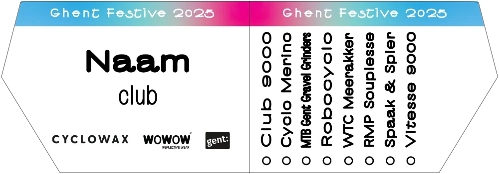

Kaderplaatje
Nieuw dit jaar: het funky kaderplaatje. Bevestig dit plaatje op je fiets en toon hoeveel ritten je hebt gereden tijdens de Ghent Festive 500.
Jouw kaderplaatje helpt je om:
- je ritten bij te houden,
- andere deelnemers te leren kennen,
- een aandenken te hebben,
- en een goed doel te steunen.
Sportaround
Alle opbrengsten van de kaderplaatjes gaan naar Sportaround, een Gentse VZW die werk maakt van sportmogelijkheden voor iedereen. Meer dan 55 actieve vrijwilligers helpen wekelijks om meer kinderen sportieve kansen aan te bieden. Door een kaderplaatje aan te kopen, steun je deze organisatie en help je meer mensen aan het sporten.
Bestellen
Vooraf bestellen
Bestel tot en met 30 november je gepersonaliseerd kaderplaatje met jouw naam via een vrije bijdrage. Haal je plaatje en kabelbinders op bij Kaffee Allez (Sint-Joriskaai 6a) vanaf 15 december of aan de start van je eerste rit.
De richtprijs is € 5, maar elke euro extra helpt Sportaround om meer sportmogelijkheden te creëren.
Te laat? Geen probleem!
Vanaf 15 december kan je bij Kaffee Allez (Sint-Joriskaai 6a) of aan de start van elke rit een blanco kaderplaatje en kabelbinders kopen via een vrije bijdrage. Wij voorzien permanente markers om je plaatje ter plaatse te personaliseren.